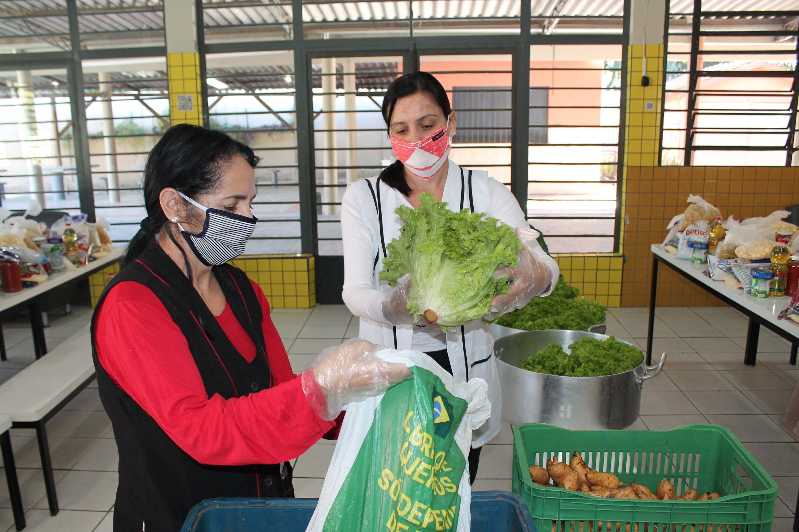

A Relevância da Agricultura Familiar nas Escolas do Paraná
A agricultura familiar é a principal fornecedora de alimentos nas escolas do Paraná, além de ser a base do fortalecimento da economia e qualidade da alimentação dos estudantes. Esse modelo de produção é apoiado por políticas públicas, como o Programa Nacional de Alimentação Escolar (PNAE), que estabelece que pelo menos 30% dos recursos transferidos sejam gastos na compra de produtos provenientes da agricultura familiar.
